chapter1 intro
OSI
centralconcepts
services 下层为上层提供的服务
interfaces 上下层之间沟通的接口
protocols 同一层之间沟通的协议
- 物理层 (Physical): 比特 (Bits)、网线、光纤。传的是原始的比特流（010101），因为电缆可能会有干扰，传过来的数据可能是乱的（有噪声）。
- 数据链路层 (Data Link): 帧 (Frames)、MAC 地址、相邻节点传输、差错检测。负责把这些比特打包成 帧 (Frame)，并进行差错检测（比如 CRC 校验）。如果发现错了，它可能会要求重传或者丢弃，从而给上层提供一个相对靠谱的链路
- 网络层 (Network): 包 (Packets)、IP 地址、路由 (Routing)、源到目的。
- 传输层 (Transport): 段 (Segments)、端口号、端到端 (End-to-End)、可靠性 (TCP)。
- 会话层 (Session): 会话管理 (建立/断开连接)。
- 表示层 (Presentation): 语法与语义 (Syntax & Semantics)、加密、压缩、格式转换。
- 应用层 (Application): 用户接口、HTTP、Email。
失败原因：timing technology implementations politics
主要是复杂性 时机和生态 和price没关系
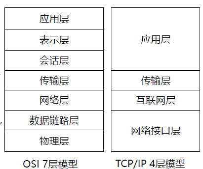
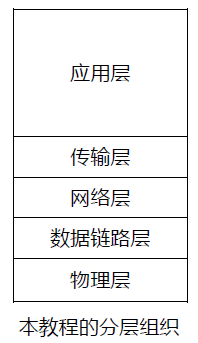
queuing delay 数据包在路由器里排队等待处理的时间，排队延迟，并不是传输机制
store and forward transmission 现代分组交换网络最核心的工作机制
packet switching 把数据切成packet来传，分组交换网络通常使用存储转发。
propagation 传播 信号在电线、光纤里跑的时间
Encapsulation
每层进行封装
chapter2物理层
多路复用技术
FDM frequency division multiplexing 频分复用
收音机 simultaneous different frequencies复用不同频率
TDM 时分复用 time 大家共用全部带宽 但是必须轮流讲
WDM波分服用 专指光信号在光纤中传播。
CDM (码分复用) 用数学编码区分，大家同时同频说话，但只有特定的解码器能听懂。
计算channel capacity/maximum data rate
nyquist 无噪声 或者给了信号级数(如果有16级 就要用4位来表示)
数据传输率=2B(带宽)*log2V
香农定理shannon
这里是信噪比
M是10的6次方
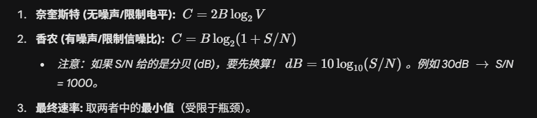
分贝:db=10log10s/n 就是说 如果给了db=30 那么log10s/n就是3 s/n就是一千
分组交换
电路交换 老式电话网 打电话前先拨号建立线路
报文交换 电报时代的产物,整个报文发到中转站,存下来再发给下一站
数据链路层协议:
- HDLC high-level data link control 广域网点对点连接 数据链路层
- SDLC 一般有DLC的都是datalink control
- PPP 属于数据链路层 pointtopoint
网络层:
IP/ICMP/ARP
最著名的就是ping命令,是被封装在ip包里的
信道的数据传输速率也就是capacity (数字带宽就是datarate传输速率,模拟带宽是频带宽度hz)
一秒钟能并行通过多少辆车（吞吐量/速率） 是由车道数量决定的，而不是车速决定的。
(Level) 或 Modulation rate: 调制速率（波特率），它决定了每秒能变多少次，进而影响能传多少 bit
Which one can be used as a key component of optical transmission system? 光传输系统的关键组件
UDP unshielded twistedpair 非屏蔽双绞线 普通网线 电信号
semiconductor laser device 半导体激光器才可以发送光源
HUB 网络连接设备 电信号
wifi router 无线电设备 发送的是无线电波
The Public Switched Telephone Network
PSTN
local loop 本地回路 连接你家和最近的电话局 铜线 (Twisted Pair) 是有线的
”Toll office” 和 “End office” 端局就是离你最近的电话局 toll就是汇接局,连接不同电话局的 中间是trunk中继线
有线的损伤:
Different Fourier components propagating at different speed 不同频率传播速度不同,叫做distortion失真
thermal noise 热噪声所有电子设备和电线都有这个问题 只要有温度电子就会产生噪音
Crosstalk between two close wires 线间串扰 也是双绞线感应的问题
无线:
multipath fading 多径衰落\阴影效应
载波计算
T1channel是北美和日本使用的数字通信标准 24复用路数,每路8bit*24路 192bits 每帧加一个bit用来同步 193bits 然后每秒要传8000帧,1.544 Mbps
中国用的是E1 2.048Mbps
一路PCM信号的速率是4kbps 也叫DS0
2.5 Gbps: 光纤网络（如 OC-48）的速率级别
chapter3 数据链路层
比特填充
HDLC (High-Level Data Link Control - 高级数据链路控制) 协议中的透明传输机制
在 PPP 标准帧中：
- Address 永远是
0xFF(表示广播/所有人)。 - Control 永远是
0x03(表示无编号帧)。 - 所以这两个字段是可以省略的
CRC 循环冗余校验
注意是异或除法!而且是首位1就可以
VLAN的构建方法
- 基于端口
- 基于mac地址
- 基于网络层协议,比如：“所有发 IPv4 协议的包去 VLAN 10，发 IPv6 协议的包去 VLAN 20”。
海明码
- （纠错半径 t=3）： 我最多只能错 3 位，再错我就回不来了。 这叫纠错能力，也就是“安全半径”。
- 书上的定义（最小距离 d=7）： 为了让你错 3 位还能找回来，正确的答案 A 和 正确的答案 B 之间，必须至少隔开 7 步远。 这里需要+1
- 然后能检错的位数就是距离-1
GBN
回退N 其中 N 代表 sending window 的大小，而这种协议中 receiving window 的大小始终为 1
发送窗口必须比序号总数(2的n次方)少 1 这样能保证序号不重复.因为你发完一轮的下一个发0 和ack丢了导致需要重传0会重复.
选择重传协议SR
通常在选择重传协议中，为了效率最大化，发送窗口和接收窗口的大小是相等的，
接收窗口的大小不能大于 序号总数 2n次方/ 2。
Piggybacking
chapter4 网络层
通过单个新路由器连接的主机
hub 啥都隔离不了 冲突域相同 广播域相同
交换机 隔离冲突 冲突域不同（每个端口独立）（广播域相同（能广播的范围是一样的）
路由器 冲突域不同（每个端口独立） 广播域不同（只能在一个网络内广播 不同网络广播包就会隔离）
发送方发送了帧0~8 然后结束的时候收到了对帧135的确认 假设是回退n 且确认号表示最后一个正确接受收的帧号，那么重传的下一帧是6 发送678
无线网络不用cd了,因为无线信号衰弱大,自己听自己的声音太大,会检测不到冲突.因此 会导致隐蔽战问题 hidden terminal AC都发给B,但是AC互相听不见就会在B处撞车.暴露战问题 Exposed terminal B发给A C听到了不敢发给D 其实不影响的
CSMA/CA是碰撞避免. 既然检测不到冲突就避免冲突
RTS/CTS
RTS = Request To Send A 说：“我要发了，长度是 X” (RTS)。
CTS = Clear To Send B 说：“好的，你发吧，长度是 X” (CTS)。
周围的人（包括隐蔽站）听到 RTS 或 CTS，都知道由于长度 X，这段时间不能说话（NAV 倒计时）。
- 如果 X 收到了 A 的 RTS，说明 X 在发送方 A 的附近。虽然 X 可能干扰不到接收方 B，但为了让 A 能顺利收到 B 回复的 CTS，X 应该闭嘴。而且 RTS 里包含了 NAV（网络分配矢量(Network Allocation Vector），告诉周围人“我要占线多久”，听到的人都得更新 NAV 并保持沉默。
- 如果 X 收到了 RTS，但没收到 CTS，那么 X 可以发送数据.有争议但理论上可行的场景…X 听到了 A 的 RTS（X 靠近 A），但没听到 B 的 CTS（X 远离 B）这意味着：X 发送数据不会干扰到 B 的接收（因为离得远）。虽然标准协议通常比较保守（听到 RTS 就设 NAV），但在理论分析中，X 确实可以发送数据而不产生冲突。这个选项通常被认为是描述 CSMA/CA 在理想状况下试图解决的问题，或者至少它不是最明显的错误。
- 如果 X 没收到 RTS，但收到了 CTS，那么 X 不可以发送数据- 说明 X 在接收方 B 的附近（是 B 的邻居）。 B 马上就要接收数据了。如果 X 这时候说话，信号会直接覆盖掉 A 发给 B 的数据，导致 B 接收失败（这就是隐蔽站干扰）。
VLAN
当交换机配置基于端口的vlan的时候
access线路下 一个物理端口在同一时间只能属于一个vlan 通过这个端口的会被打上vlan标签或者撕掉vlan标签 一般是pc到交换机之间
trunk线路就是允许各种vlan的标签通过 也不对vlan做修改.但是他本身也是只有一个vlan的
交换机转发表
【动作拆解 - 第 1 帧】：
- Source (源地址)： A1（在端口 1）。
- Destination (目的地址)： C1（在端口 3）。
- Switch’s Reaction (交换机的反应)：
- Learning (学习)： 交换机收到帧，看到源 MAC 是 A1，是从 Port 1 进来的。于是它在转发表里记下一笔：
A1 -> Port 1。 - Lookup (查表)： 交换机看目的 MAC 是 C1。去查表，发现 表中没有 C1 的记录（Unknown Unicast，未知单播帧）。
- Forwarding (转发决策)： 因为找不到人，只能 泛洪 (Flood)
- Result (结果)： 帧被复制并发往除来源口（Port 1）以外的所有活动端口。即 Port 2, 3。
【考试关键词解析】：
- Learning (学习)： 交换机收到帧，看到源 MAC 是 A1，是从 Port 1 进来的。于是它在转发表里记下一笔：
- Confirmation frame： 通常指 ACK 帧，反正就是回信。这意味着角色互换了：C 变成了发送方，A 变成了接收方。
【动作拆解 - 第 2 帧】： - Source (源地址)： C1（在端口 3）。
- Destination (目的地址)： A1（在端口 1）。
- Switch’s Reaction (交换机的反应)：
- Learning (学习)： 交换机收到帧，看到源 MAC 是 C1，是从 Port 3 进来的。于是它在表里记下一笔：
C1 -> Port 3。（此时表里有 A, B, C 三个人了）。 - Lookup (查表)： 交换机看目的 MAC 是 A1。去查表，发现 表中有 A1 的记录！
- 为什么有？ 因为在“第二句”里，交换机刚刚通过 A 发来的帧学会了 A 在 Port 1。
- Forwarding (转发决策)： 既然认识路，那就 单播 (Unicast)。
- Result (结果)： 帧只会被发往 Port 1。
- Learning (学习)： 交换机收到帧，看到源 MAC 是 C1，是从 Port 3 进来的。于是它在表里记下一笔：
chapter5
Which is not the private address that will not appear in Internet datagram?“
private address:
- Class A:
10.0.0.0到10.255.255.255 - Class B:
172.16.0.0到172.31.255.255（注意这个范围！） - Class C:
192.168.0.0到192.168.255.255
这些范围以外的都是公网地址
ipv6地址格式
- IPv6 Address： 长 128 位。通常写成 8 组，每组 4 个十六进制数，中间用冒号
:隔开。例如ABCD:EF01:2345:6789:ABCD:EF01:2345:6789。 - 压缩规则 (Zero Compression)： 如果有一串连续的
0，可以用双冒号::代替，但只能出现一次。 - 混合记法： IPv6 也可以兼容 IPv4 的写法，比如
::192.168.0.1，这叫 IPv4-mapped IPv6 address。
前96为0 后32位是ipv4
路由协议
下列都是动态的 dynamic routing protocol
IGP interior gateway protocol 内部网关协议 在同一个自治系统AS内部使用的协议 包括
-
routing information protocol 路由信息协议 RIP
-
OSPF
EGP 外部网关协议 -
距离向量:RIP的算法类型,通过跳数衡量距离 每隔30瞄把自己的整个路由表发给邻居
-
linkstate OSPF的算法类型 只发链路状态信息来画地图
为了让数据包从一个 局域网 (LAN) 传输到 互联网 (Internet)，需要下列哪种设备？
A. Bridge (网桥) / C. Switch (交换机) / D. Hub (集线器)：
- 这三个都是 Layer 2 (数据链路层) 或 Layer 1 (物理层) 的设备。
- 它们只认识 MAC 地址，只能在同一个网络内部倒腾数据。它们出不了“村”。
router才可以连接不同的网络
链路状态路由的特点
Link-State (链路状态，如 OSPF)：
- 每个人都画一张完整的地图（拓扑图）。
- 路由器之间交换的是 LSA (链路状态通告)，即“我是谁，我邻居是谁，路费多少”。
- 关键点： 我只告诉你我的局部信息，但我会把这个信息告诉全网所有人（泛洪）。
Distance Vector (距离向量，如 RIP)：
- 谣言路由： 我不画地图，我只听邻居说“去北京只要 3 跳”。
- 关键点： 我把我的整个路由表（我知道的所有路）交换给我的邻居。
第一步：打招呼 (Hello)
刚开，路由器通过发 Hello 包 发现身边的直连邻居。
结果：我知道谁在我隔壁，以及我和他之间的路况（Cost/Metric）。
第二步：写日记 (LSA - Link State Advertisement)
每个路由器写一张“小纸条”（这就是 链路状态通告 LSA）。
内容：“我是路由器 X，我的邻居有 Y 和 Z，我和 Y 的距离是 10，和 Z 的距离是 5。”
注意：我只描述我自己的局部视野。
第三步：泛洪 (Flooding)
最关键的一步！大家把自己的“小纸条”发给所有人。
路由器收到别人的 LSA 后，先存一份，然后立即转发给它的邻居（除了发给它的那个）。
结果：一传十，十传百，只要网络是通的，最终全网所有路由器都会收到所有其他人写的纸条。
第四步：拼地图 (LSDB - Link State Database)
每个路由器把收集到的成百上千张 LSA 汇总在一起，形成一个 链路状态数据库 (LSDB)。
重点：此时，全网所有路由器的 LSDB 是完全一样的（也就是大家都拥有了同一份完整的网络拓扑图数据）。
类比：每个人手里都拿到了同一个迷宫的完整图纸。
第五步：算路径 (Dijkstra / SPF 算法)
有了完整地图（LSDB），每个路由器以自己为根 (Root)，独立运行 Dijkstra 最短路径优先算法 (SPF)。
计算出从“我”出发，去往网络中每一个节点的最短树。
最后一步：把算出来的最优路径，填入自己的路由表。
CIDR(Classless Inter-Domain Routing)无类别域间路由 是一种更灵活的ip地址分配和管理方法
因为 CIDR 允许我们将很多零散的小网段，聚合 (Aggregate) 成一个大网段告诉全世界。
- 它消灭了 A/B/C 类：不再看 IP 开头是几来判断类别。
- 看掩码/斜线：掩码里有多少个
1（或者斜线后的数字是几），网络号长度就是多少位。
举例： 如果不适用 CIDR，路由器可能需要记录 4 条路：
- 去 192.168.0.0 的走左边
- 去 192.168.1.0 的走左边
- 去 192.168.2.0 的走左边
- 去 192.168.3.0 的走左边
有了 CIDR，路由器可以偷懒，把这 4 个 C 类合并成一条记录：
- “去
192.168.0.0/22（涵盖了上面 4 个）的全都走左边。”
最长前缀匹配原则 (Longest Prefix Match)
- 这是路由器的核心法则：如果一个目的 IP 同时匹配了路由表中的多行，路由器会选择子网掩码最长（也就是掩码中 1 更多、网段范围更小更精准）的那一条路由。
- 默认路由
0.0.0.0的掩码长度为 0，是优先级最低的保底选项。
ARP是已知ip找mac RARP是反向arp 已知mac找ip
Traceroute工具
Path (路径) / Routers along the path
设计用来查找从主机到目的 IP 地址的 路径上的路由器 (Routers along the path) 的？Traceroute工具
利用的是IP头里的TTL生存时间,它先发一个 TTL=1 的包，第 1 个路由器收到后 TTL 减为 0，路由器报错“我死了”，发回一个 ICMP 包（暴露了第 1 个路由器的 IP）。- 再发 TTL=2，第 2 个路由器报错。
- 以此类推，把沿途的路由器一个个“骗”出来。
Netstate (应该是 Netstat)： 用来查看自己电脑上的网络连接状态（开了哪些端口）。
IP协议特性:
best effort
unreliable
connectionless
尽力而为 不可靠(tcp负责) ,无链接(tcp负责)
ip最大的本事就是路由
chapter6
UDP 性格： 它是一个 不可靠 (Unreliable)、无连接 (Connectionless) 的协议。
总之什么都不用 什么都不保证
TCP
- Step 1 (A → B):
SYN=1,seq = x(这里 x=220)。- 意思：A 说“我想连你，我的起始序号是 220”。
- Step 2 (B → A): （本题考点！）
- Flags: 必须回应
SYN=1(我也想连你) 和ACK=1(我收到你的请求了)。 - ack (确认号): 必须是 A 的序号 + 1。
- 公式：
ack = x + 1 - 计算：
220 + 1 = 221。 - 意思：“220 我收到了，下次请给我发 221”。
- 公式：
- seq (序号): B 自己的起始序号
y。通常是随机的。
- Flags: 必须回应
- Step 3 (A → B):
ACK=1,seq=x+1,ack=y+1。
累计确认
流量控制:滑动窗口
- TCP 头里有一个字段叫 Window Size (RWND, Receive Window)。
- 接收方在给发送方回 ACK 的时候，顺便在头里带上：“我的缓存区还能装 X 个字节”。
- 发送方看到后，就会控制自己：未确认的数据总量 ⇐ X。
- 如果接收方缓存满了，它会发一个
Window Size = 0的包，发送方就会暂停发送，进入等待状态（这就叫零窗口探测）。
拥塞控制 congesion
机制：发送方自己维护一个变量叫 CWND (Congestion Window)。发送方实际能发的窗口大小 = min(RWND, CWND)（取接收方能力和网络能力的最小值）。
四个经典阶段 (Slow Start & Congestion Avoidance)：
- 慢启动 (Slow Start)：
- 刚开始不知道路况，只发 1 个包。收到 ACK 后，发 2 个，再发 4 个，8 个…… 指数级增长。现象：窗口从 1 开始，指数级增长 (1, 2, 4, 8…)。
- 逻辑：快速试探网络的底线。
- 拥塞避免 (Congestion Avoidance)：
- 当增长到一个阈值（ssthresh）后，改为线性增长（每次 +1）。
- 逻辑：小心翼翼地增加，防止突然堵车。
- 快重传 (Fast Retransmit)：
- 如果发送方连续收到 3 个重复的 ACK（比如连续 3 次 ACK 200），说明 200 丢了，但网络没断（因为后面的 ACK 还能回来）。
- 立即重传 200，不需要等超时定时器。
- 快恢复 (Fast Recovery)：
- 发生了快重传，说明网络有点堵，但没死透。于是把发送速度减半（而不是归零），然后继续线性增长。
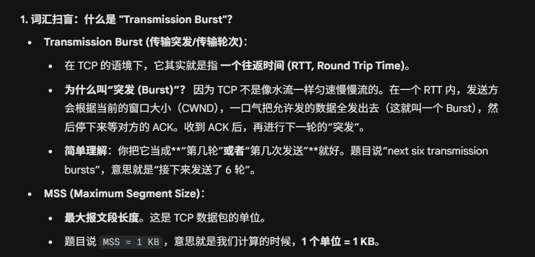
- 发生了快重传，说明网络有点堵，但没死透。于是把发送速度减半（而不是归零），然后继续线性增长。
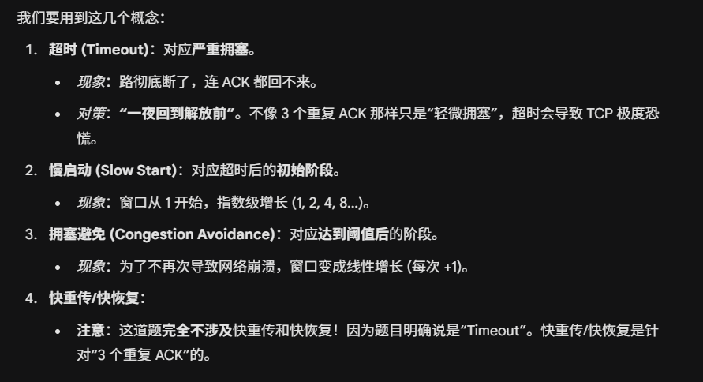设定阈值 (ssthresh)：根据规则，阈值设为当前窗口的一半。
- KB。
- 重置窗口：因为是超时，CWND 直接重置为 1 MSS。
- KB。
- 然后进入阶段：慢启动 (Slow Start)。
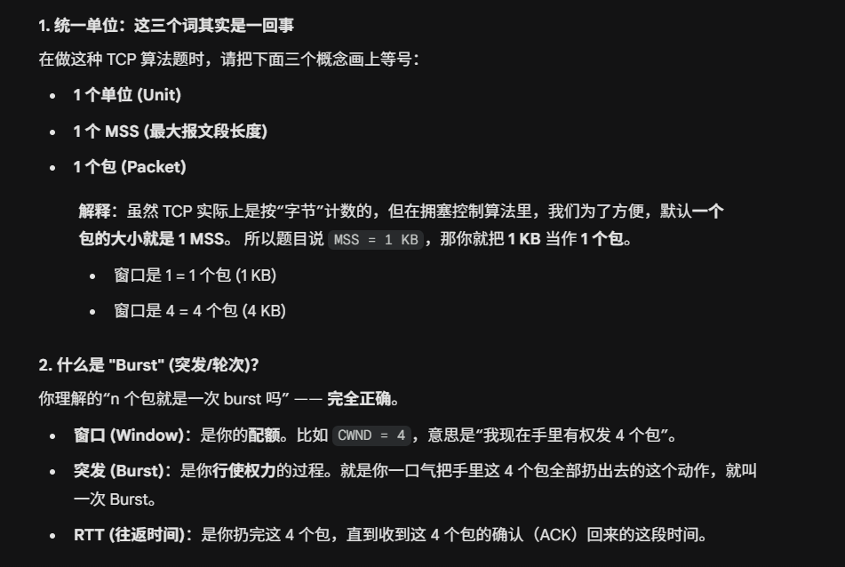
序列号空间是基于字节的，而不是基于段的
ACK 只能确认“连续收到的最后一位”。
比如100200丢了 200300收到了 那么接下来发的ack应该是=100的 因为只能确认前面100 不能确认到300
- 原因：TCP 是 点对点 (Point-to-Point) 的协议。它必须在两个明确的 IP 和端口之间建立连接。
- 广播（发给所有人）和组播（发给一组人）是 UDP 的特长，TCP 做不到。
chapter7 应用层
DNS
DNS记录格式
A记录 域名到ip地址
TXT记录 域名到文本字符串
SOA记录 起始授权机构 后面一大串参数
MX记录 mail exchange 的标准格式必须包含一个优先级数字 IN MX 10 邮件服务器域名
resolver 解析器
client
local name server 本地域名服务器: 通常由你的 ISP（电信/移动）或者学校网络中心自动分配给你（比如浙大的 DNS），或者你自己指定的（比如 Google 的 8.8.8.8）。
root/TLDserver Top-Level Domain 根服务器和顶级域名服务器
Authoritative Name Server (权威名称服务器
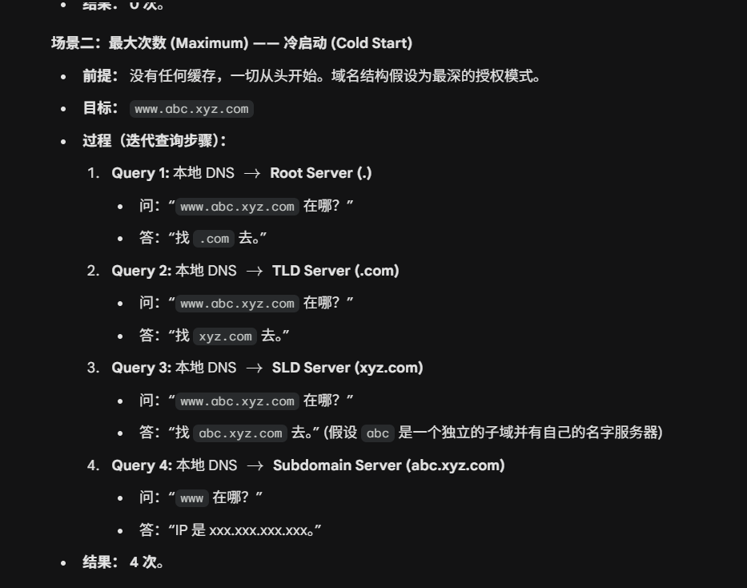
电脑内部解析器对localnameserver说 查询www.google.com 的 IP.这是recursive query
然后localname server开始查询,
这里是迭代的 虽然得知了信息 但下一个级别的dns还是需要local name server去询问
- 找根服务器 然后从后面开始一部分一部分找:先找.com
- .com顶级域名服务器 找google.com
- google.com的权威服务器:www.google.com的ip是xxxxxx
然后localnameserver再返回给client 同时这个会被记在cache里面
应用层协议及其对应端口号
电子邮件类:
SMTP simple mail transfer protocol 25 TCP 发邮件
POP3 post office protocol v3 110 TCP 收邮件特点是“下载并删除”（默认），对多设备同步不友好。
IMAP internet message access protocol 143 TCP 收邮件特点是“同步”，邮件保存在服务器上，比 POP3 更强。
远程连接类:
telnet telecommunication network 23 TCP 远程登陆明文传输（极不安全），密码会被截获。
SSH (Secure Shell) 22 TCP 远程登录。加密传输（安全），它是 Telnet 的替代者。
文件传输类
FTP file transfer protocol 21/20 TCP传文件。注意它用两个端口！21是control 用来传指令 20是data专门传文件数据
TFTP trivial FTP 69 UDP 简单文件传输 只传小文件不用握手
网页与域名
HTTP 80看网页。明文传输。
HTTPS 443看网页（加密）。HTTP + SSL/TLS。
DNS 53 UDP/TCP 查ip,域名解析 查IP。域名解析。通常查询用 UDP，主备服务器同步用 TCP。
第 91 题：传输技术分为 Point-to-point (点对点) 和 Broadcast links (广播链路)。
- 记忆点：这是物理层的分类，广播链路指共享介质（如 Wi-Fi、以太网）。
- ARP 的归属层级：luxq 资料指出，ARP 最好被视为介于链路层和网络层边界的协议，但它为网络层提供服务。
- OSI 与 TCP/IP 的对比：OSI 参考模型网络层支持无连接和面向连接，但 TCP/IP 的互联网层仅支持无连接通信（IP协议）。
- SSH 端口误区：务必记住 SSH 是 22 端口，不要和 FTP 的 21 混淆。
- MIME 编码：Base64 编码是将每 24 位（3字节）分割为 4 个 6 位的单元，并映射为 ASCII 字符。
- HTTP 状态码：重点记住 200 (OK)、301 (永久重定向)、404 (找不到页面) 和 500 (服务器内部错误)。
keep track of a user and its related information by the Web server?”
- HTTP 协议本身是 无状态 (Stateless) 的。这意味着你请求了第 1 页，再请求第 2 页，服务器根本不知道你是同一个人。
- 为了记住“你是谁”（比如保持登录状态、购物车里的商品），服务器会发给你一个小纸条，让你下次请求时带上。这个小纸条就是 Cookie。
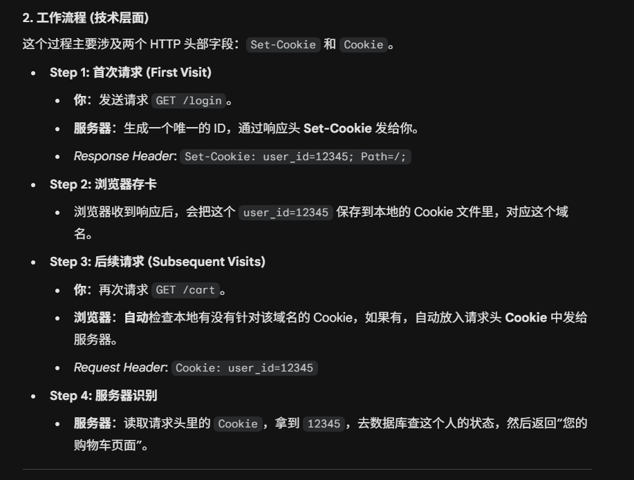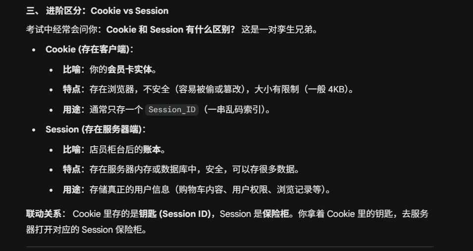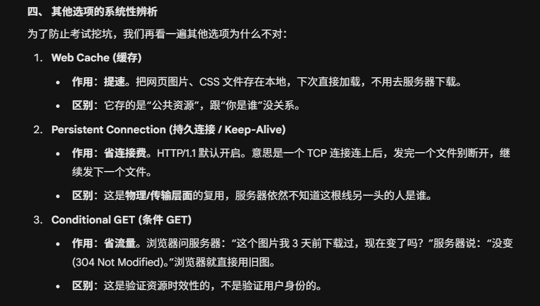
Cookie 存在哪？：浏览器 (Client)。
HTML标签语义
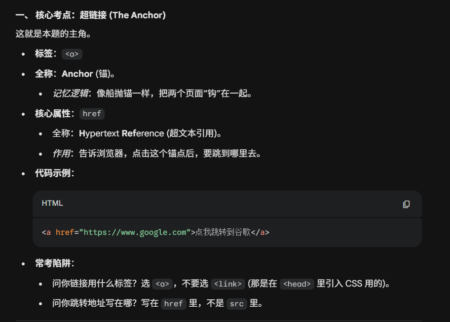
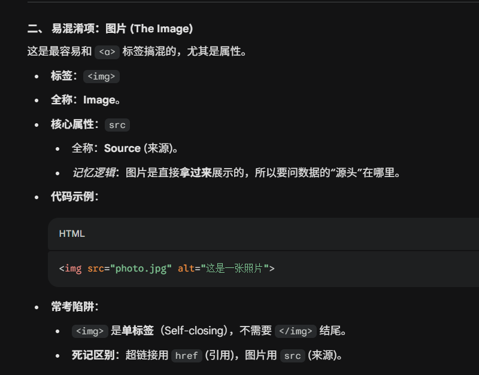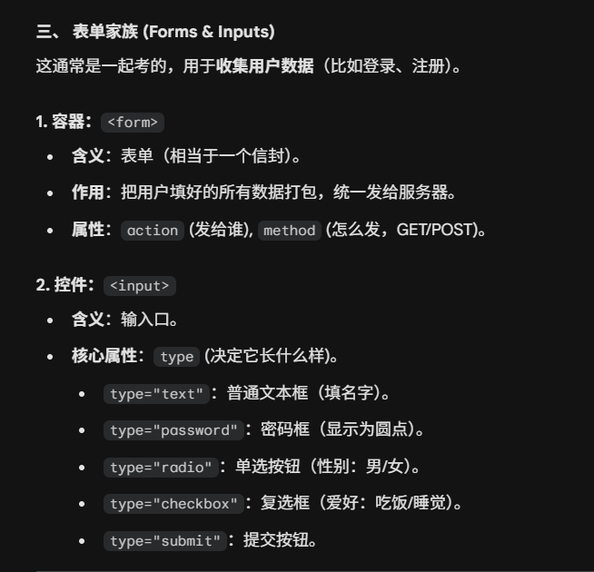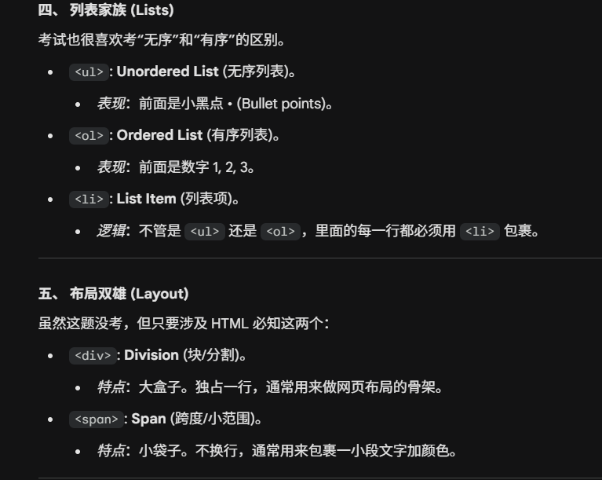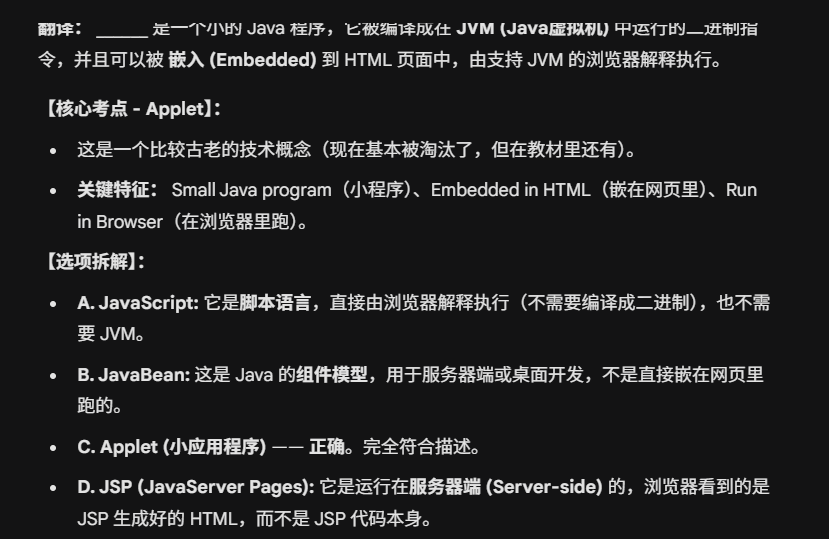
HTTP是持久连接
- 无状态 (Stateless)： 描述的是**“记忆能力”**（应用层逻辑）。
- 持久连接 (Persistent Connection)： 描述的是**“传输通道”**（传输层/物理连接）。
content delivery network
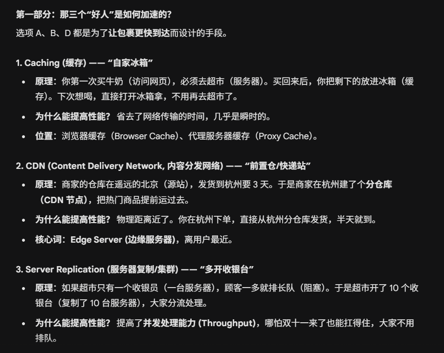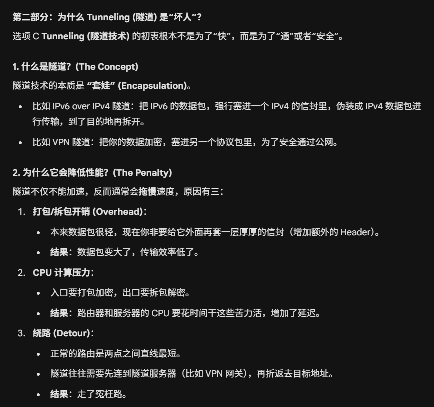
chapter8 网络安全
目标:保护以下的性质
- 机密性 confidentiality 被截获
- 完整性integrity 被篡改
- 认证authentication 假身份
块密码：
AES DES老掉牙的对称加密
工具 加密算法
- 对称加密 symmetric encryption 快 但是有缺陷
- 加密和解密用同一个密钥,常见算法是AESAdvanced Encryption Standard:块密码 block cipher 把数据切成一块一块做加密
- 每一块独立加密:ECB 虽然解不开但是能看到图案和模式：如果两块一样 加密后也一样了
- cipher block chaining CBC 把前一块的加密结果混入下一块加密过程中
- 因此:为了防止针对 ECB 的模式分析攻击，AES 必须配合 CBC 模式使用。
- 非对称加密 public-key cryptography 安全但是慢 主要的算法是RSA 唯一的它是目前最流行的公钥加密算法。
- 公钥 公开给所有人 用来锁 加密 或者验 验证签名
- 私钥 用来开 解密Decrypt 或者签 数字签名
证书体系
办证 (Issue)：
- 淘宝把自己的公钥交给 CA (权威机构)。
- CA 审核通过后，用 CA 的私钥 在淘宝的公钥上盖了个章（数字签名），生成了证书。
- 你的浏览器访问淘宝，淘宝出示证书。
- 浏览器怎么知道这个证书上的章是真的？
- 浏览器内置了 CA 的公钥（操作系统自带）。
- 浏览器用 CA 的公钥 去解密/验证那个数字签名。如果解开了，说明这个章确实是 CA 盖的，证书是真的。
验证网站证书的真伪，是验证 CA 的签名，所以要用 CA 的公钥。
时延相关
transmission delay 网卡把数据推到线路上的时间 是数据长度、带宽（datarate
propagation delay 在物理介质里跑要花的时间
T=物理距离/传播速度 跟数据包大小无关
nslookup 查ip
tracert trace route
arp 查mac地址
netstat 查连接状态
通信模式
单播:一对一 unicasting
广播 broadcasting
组播/多播 multicasting 场景：比如看“IPTV 网络电视”或者“Zoom 分组会议”。只有加入了“体育频道组”的人能收到体育频道的视频流，不看的人收不到。既不是只发给一个人，也不是发给全网所有人，而是发给特定的一群人（子集）。
支持向机器的一个子集subnet
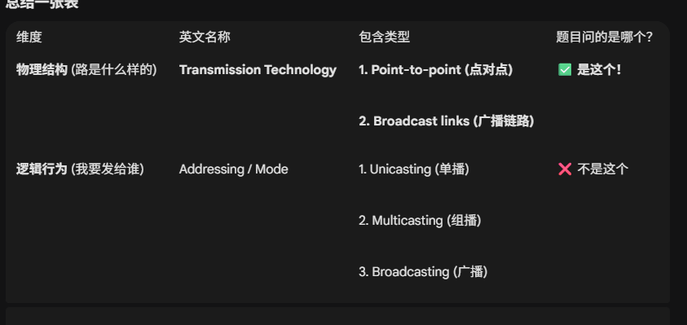
socket
primitive原语
阻塞调用者: accept
socket bind listen都是瞬时操作
什么是基于udp的 RTP real time transport protocol